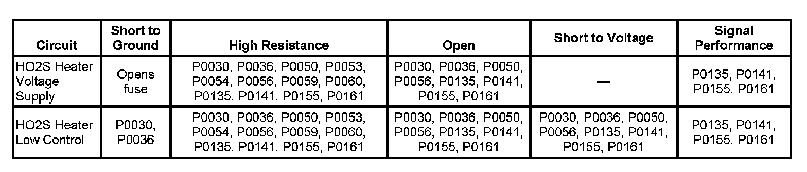
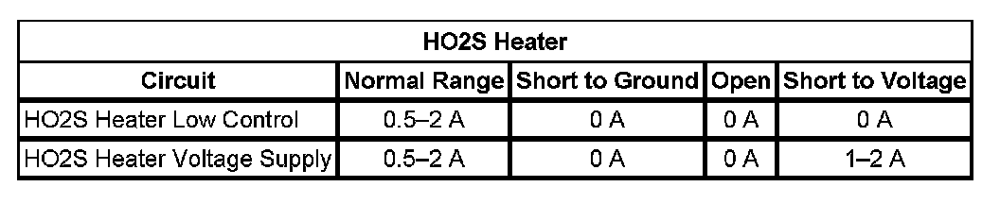

P0161
DTC P0050, P0056, P0059, P0060, P0155, or P0161
DIAGNOSTIC INSTRUCTIONS
- Perform the Diagnostic System Check - Vehicle prior to using this diagnostic procedure. Initial Inspection and Diagnostic Overview
- Review Strategy Based Diagnosis for an overview of the diagnostic approach.
- Diagnostic Procedure Instructions provides an overview of each diagnostic category.
DTC DESCRIPTORS
DTC P0050
HO2S Heater Control Bank 2 Sensor 1
DTC P0056
HO2S Heater Control Bank 2 Sensor 2
DTC P0059
HO2S Heater Resistance Bank 2 Sensor 1
DTC P0060
HO2S Heater Resistance Bank 2 Sensor 2
DTC P0155
HO2S Heater Performance Bank 2 Sensor 1
DTC P0161
HO2S Heater Performance Bank 2 Sensor 2

DIAGNOSTIC FAULT INFORMATION
TYPICAL SCAN TOOL DATA
HO2S Heater:

CIRCUIT/SYSTEM DESCRIPTION
Heated oxygen sensors (HO2S) are used for fuel control and post catalyst monitoring. Each HO2S compares the oxygen content of the surrounding air with the oxygen content in the exhaust stream. The HO2S must reach operating temperature to provide an accurate voltage signal. A heating element inside the HO2S minimizes the time required for the sensors to reach operating temperature. Voltage is provided to the heater by an ignition voltage circuit through a fuse. With the engine running, ground is provided to the heater by the HO2S heater low control circuit through a low side driver within the engine control module (ECM). The ECM uses pulse width modulation (PWM) to control the HO2S heater operation to maintain a specific HO2S operating temperature range.
CONDITIONS FOR RUNNING THE DTC
DTC P0050 or P0056
- The ignition 1 signal parameter is between 9-18 volts.
- The engine speed is more than 400 RPM.
- DTCs 0050 or P0056 run once per drive cycle when the above conditions are met.
DTC P0059 or P0060
- DTCs P0112, P0113, P0117, P0118 are not set.
- The engine is started.
- The ignition voltage is less than 18 volts.
- The ignition is OFF for more than 10 hours.
- The Engine Coolant Temperature (ECT) Sensor parameter is between -30 to +45°C (-22 to +113°F) at engine start-up.
- The ECT Sensor parameter minus the Intake Air Temperature (IAT) Sensor parameter is less than 8°C (14°F) at engine start-up.
- DTCs P0059 and P0060 run once per drive cycle when the above conditions are met.
DTC P0155
- DTCs P0068, P0101, P0102, P0103, P0106, P0107, P0108, P0112, P0113, P0116, P0117, P0118, P0120, P0121, P0122, P0123, P0125, P0128, P0201, P0202, P0203, P0204, P0220, P0222, P0223, P0442, P0443, P0446, P0449, P0455, P0496, P1516, P2101, P2119, P2135, P2176 are not set.
- The ECT Sensor parameter is more than 50°C (122°F).
- The Ignition 1 Signal parameter is between 10-18 volts.
- The MAF Sensor parameter is between 3-40 g/s.
- The Engine Run Time parameter is more than 300 seconds.
- The Engine Speed parameter is between 500-3,000 RPM.
- DTC P0155 runs the heater current test once per drive cycle when the above conditions are met for 2 seconds.
DTC P0161
- DTCs P0068, P0101, P0102, P0103, P0106, P0107, P0108, P0112, P0113, P0116, P0117, P0118, P0120, P0121, P0122, P0123, P0125, P0128, P0201, P0202, P0203, P0204, P0220, P0222, P0223, P0442, P0443, P0446, P0449, P0455, P0496, P1516, P2101, P2119, P2135, P2176 are not set.
- The ECT Sensor parameter is more than 50°C (122°F).
- The Ignition 1 Signal parameter is between 10-18 volts.
- The MAF Sensor parameter is between 3-40 g/s.
- The Engine Run Time parameter is more than 300 seconds.
- The Engine Speed parameter is between 500-3,000 RPM.
- DTC P0161 runs the heater current test twice per drive cycle when the above conditions are met for 2 seconds.
CONDITIONS FOR SETTING THE DTC
DTC P0050 or P0056
- The control module detects that the affected HO2S heater low control circuit is not within a specified range at engine start-up.
- DTCs P0050 or P0056 set within one second when the above condition is met.
DTC P0059 or P0060
- The ECM detects that the affected HO2S heater low control circuit is not within a specified range at engine start-up.
- DTCs P0059 and P0060 set within one second when the above condition is met.
DTC P0155
- The control module detects that the HO2S 1 heater current parameter is more than 3.125 amps or less than 0.25 amp.
- DTC P0155 sets within 30 seconds during the heater current test when the above condition is met.
DTC P0161
- The control module detects that the HO2S 2 heater current parameter is more than 1.625 amps or less than 0.25 amp.
- DTC P0161 sets within 30 seconds during the heater current test when the above condition is met.
ACTION TAKEN WHEN THE DTC SETS
DTC P0050, P0056, P0059, P0060, P0155, or P0161 are Type B DTCs.
CONDITIONS FOR CLEARING THE MIL/DTC
DTC P0050, P0056, P0059, P0060, P0155, or P0161 are Type B DTCs.
CIRCUIT/SYSTEM VERIFICATION
- Allow the engine to reach operating temperature. With the engine running, observe the HO2S Heater parameter with a scan tool. The value should vary from below 2 A to above 1 A.
- With the engine running at operating temperature, observe the HO2S Heater parameter with a scan tool and manipulate the related wiring and connectors.
- If manipulation does affect the parameter then repair the harness or connector.
CIRCUIT/SYSTEM TESTING
IMPORTANT: You must perform the Circuit/System Verification before proceeding with Circuit/System Testing.
1. Ignition OFF, disconnect the harness connector at the appropriate HO2S.
2. Ignition ON, verify that a test lamp illuminates between the appropriate HO2S heater voltage supply circuit terminal D and ground.
- If the test lamp does not illuminate, test the HO2S heater voltage supply circuit for a short to ground or an open/high resistance. If the circuit tests normal and the HO2S heater voltage supply circuit fuse is open, test all components connected to the fuse and replace as necessary.
3. Ignition ON, verify that a test lamp does not illuminate between the appropriate HO2S heater voltage supply control circuit terminal D and the appropriate HO2S heater low control circuit terminal C.
- If the lamp illuminates, test the HO2S heater low control circuit for a short to ground. If the circuit tests normal, replace the ECM.
4. Engine running, leave the test lamp connected from the previous step. The lamp should flash or be ON steady.
- If the test lamp is not ON steady or flashing, test the HO2S heater low control circuit for a short to voltage or an open/high resistance. If the circuit tests normal, replace the ECM.
5. IMPORTANT:
- The output driver should detect a short to voltage and turn OFF. If a resistance fault is present the driver will remain ON and the scan tool will display more than 0.0 amp. Less than 10 ohms of resistance may set a DTC.
- Performing this test may set additional DTCs.
Ignition OFF, install a 30A fused jumper wire between the appropriate HO2S heater voltage supply circuit terminal D and the appropriate HO2S heater low control circuit terminal C.
6. Engine running, verify the appropriate scan tool HO2S Heater parameter is less than 0.1 amp.
- If more than the specified range, test the HO2S heater voltage supply and HO2S heater low control circuits for more than 1 ohm of resistance. If the circuits test normal, replace the ECM.
7. If the ECM and all circuits test normal, replace the appropriate HO2S.
REPAIR INSTRUCTIONS
NOTE: Refer to Heated Oxygen Sensor Resistance Learn Reset Notice.
Perform the Diagnostic Repair Verification after completing the diagnostic procedure.
- Heated Oxygen Sensor Replacement - Bank 2 Sensor 1 (1500 Series) Heated Oxygen Sensor Replacement - Bank 2 Sensor 1 (2500 Series)
- Heated Oxygen Sensor Replacement - Bank 2 Sensor 2 (1500 Series) Heated Oxygen Sensor Replacement - Bank 2 Sensor 2 (2500 Series)
- Control Module References for ECM replacement, setup, and programming. Verification Tests